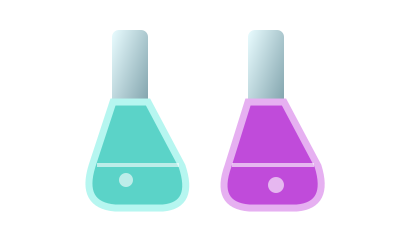

Guidelines
Latest clinical guidelines and recommendations
A curated collection of high-quality learning materials, tools and references.

Latest clinical guidelines and recommendations
Evidence-based articles and reviews
Lectures, case discussions and procedures
Clinical and risk score calculators
Handouts, charts and study materials
Trusted external resources and portals